まくまくBlenderノート
Blender の基本操作まとめ
| Ctrl + Up / Ctrl + Down / Shift + Space | カーソル下のエディタを最大化 |
| Alt + F10 | エディタのメイン領域をフルスクリーン表示 |
| Ctrl + Alt + U / Cmd + [,] | User Preference（ユーザ設定）を開く |
選択のショートカットキーは、A / B / C を覚えるとよいです。
| 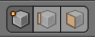 | Ctrl + Tab（編集モードのみ） | メッシュ選択モードの切り替え（頂点／辺／面） |
| 右クリック | カーソル下の要素を選択 | |
| Shift + 右クリック | 連続選択 | |
| A | 全てを選択／解除 ((De)select All) | |
| 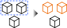 | B → ドラッグ | 矩形で囲んで選択 (Border Select) |
| B → Shift + ドラッグ | 〃解除（中央ボタンのドラッグでも可） | |
| C → 左クリック | 円内の要素を選択 (Circle Select) （ホイールで円サイズ変更） |
|
| C → Shift + 左クリック | 〃解除（中央ボタンのドラッグでも可） | |
| 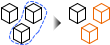 | Ctrl + ドラッグ | 自由領域で囲んで選択 |
| Ctrl + Shift + ドラッグ | 〃解除 | |
| Ctrl + I | 選択の反転 (Inverse) |
ここでの数字キー 0〜9 や +/-/. キーは、テンキー上のキーを表しています。
| - / + / マウスホイール | ズームイン／アウト | |
| Shift + 中央ボタンドラッグ | 視点の平行移動 | |
| 中央ボタンドラッグ | 視点の回転 | |
| 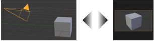 | 0 | カメラ視点 |
| 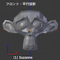 | 1 | 前 |
| 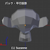 | Ctrl + 1 | 後ろ |
| 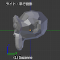 | 3 | 右 |
| 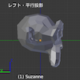 | Ctrl + 3 | 左 |
 |
7 | 上 |
| 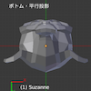 | Ctrl + 7 | 下 |
| 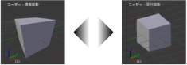 | 5 | 透視投影 ↔︎ 平行投影 |
| 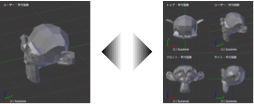 | Ctrl + Alt + Q | 四分割表示 (Quad View) |
| Shift + C | 全てを表示 (View All) ... 全てのオブジェクトを表示するようにズーム | |
| . | 選択したオブジェクトにズーム ★ある個所にフォーカスして編集するときに便利 | |
| Shift + B → 矩形選択 | 矩形選択した部分にズーム | |
| `（バッククォート） | 全レイヤの表示／非表示 |
| Tab | オブジェクトモード ⇔ 編集モードの切り替え | |
| Ctrl + Tab（編集モード以外の時） | オブジェクトモード ⇔ ウェイトペイントモードの切り替え | |
| T | ツールシェルフの表示 | |
| N | プロパティリージョンの表示 | |
| Shift + S | スナップメニューの表示 3D カーソルを原点に戻すときに使用 |
|
| 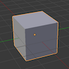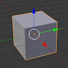 | Ctrl + Space | マニピュレーターの ON/OFF (Show Manipulator) |
| Shift + A | プリミティブ・オブジェクトを追加（メニュー表示）(Add Primitive Object) |
| G | 移動 (Grab/Move) |
| R | 回転 (Rotate) |
| S | 拡大縮小 (Scale) |
| X | 削除 (Delete) |
| Shift + D | 複製 (Duplicate) |
| U | UV マッピング (UV Mapping)（メニュー表示） |
| Shift + A | メッシュを追加（メニュー表示） | |
| W | スペシャル・メニューを表示 (Special Menu) | |
| Ctrl + E | 辺メニューを表示 (Edges Menu) | |
| 3 つ以上の頂点を選択して F | 面の作成 (Make Face) ... 選択した辺・頂点を繋ぐように面・辺を作成 | |
| Alt + F | 面を張る ... 選択した頂点を閉じるように三角形の面を作成 | |
 |
I | 面を差し込む (Insert Faces) |
| E | 面の押し出し (Extrude Region) | |
| Ctrl + R | ループカットとスライド (Loopcut and Slide) | |
| 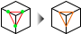 | K → クリック繰り返し | ナイフ (Knife) |
| W → Subdivide | （面の）細分化 (Subdivide) | |
| W → Subdivide | （辺の）細分化 (Subdivide) | |
 |
J | 頂点の経路を連結 (Connect Vertext Path) 既存の面を分割 |
| 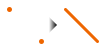 | 2 つの頂点を選択して F | 辺の作成 面を分割したいときは J を使うこと |
| 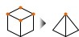 | Alt + M | 選択した頂点を結合 (Merge) |
| Ctrl + T | 面を三角化 (Triangulate Faces) | |
| Alt + J | 三角面を四角面に (Tris to Quads) |
| 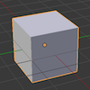 | ソリッド デフォルトの表示 |
|
| 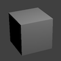 | Shift + Z | レンダー レンダリング結果をプレビュー表示 |
| 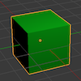 | （なし） | マテリアル GLSL (OpenGL Shading Language) で描画。光源が反映される |
| 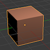 | Alt + Z | テクスチャー テクスチャを貼った状態で表示 |
| 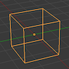 | Z | ワイヤーフレーム 辺のみを表示 |
| （なし） | バウンディングボックス オブジェクトの範囲を直方体で表示 |